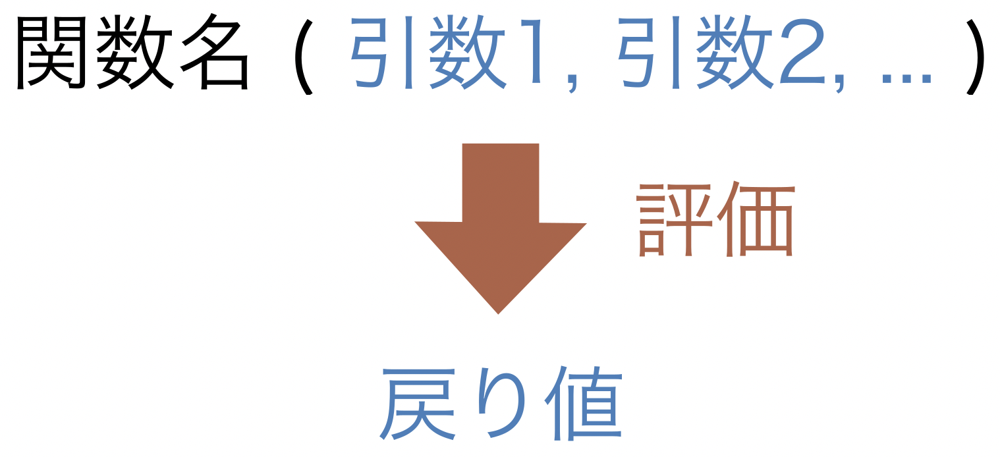
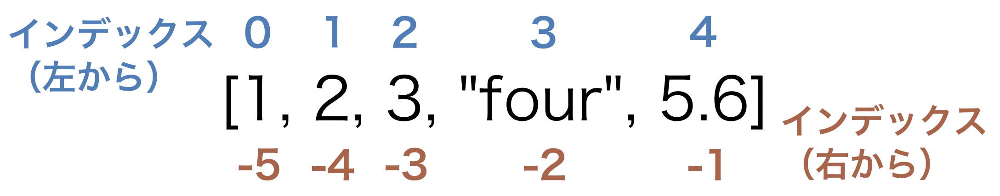
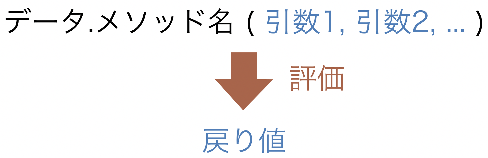

第4回 プログラムの材料と道具
Contents
第4回 プログラムの材料と道具#

この章で学ぶこと#
第3回では、数値や文字列といった基本的なデータの扱い方を学んだ。 プログラミングを工作に例えると、これらデータは材料にあたる。 一方で、工作における道具にあたるものが関数やメソッドである。 今回はデータについてさらに詳しく学び、関数やメソッドについても学ぶ。
データと関数#
Pythonには数値や文字列の他にもいろいろな種類のデータがある。こうした種類の違いのことをデータの型（type）と言う。 データ型には、整数型（int）、浮動小数点数型（float）、文字列型（str）、リスト型（list）、真偽型（bool）などがある。
データ型を調べるには type() という関数を使う。関数とは何かについて説明する前に、まずは使ってみよう。
[1]:
type(3)
[1]:
int
[2]:
type(3.14)
[2]:
float
[3]:
type("text")
[3]:
str
上から順に 3 は整数型、3.14 は浮動小数点数型、"text" は文字列型という結果になった。
ここで使った type() は、データを受け取り、そのデータ型を調べて結果を返した。 このようにデータを受け取って、何らかの処理を行った上で、必要に応じて結果を返すものを関数という。 関数は引数という変数を通じてデータを受け取り、必要に応じて戻り値を返す。 例えば type("text") というコードでは、type() 関数は "text" というデータを引数として受け取り、str という型を戻り値として返している。
関数によっては引数を複数持つこともあり、その場合はデータを , で区切って渡す。関数の使い方を一般的な形で図に表すと、次のようになる。

実は前回の講義でも説明なしに print() という関数を使っていた。print() は複数のデータを受け取り、戻り値を返さない関数である。
[4]:
print("text1", "text2", 3)
text1 text2 3
複数のデータを渡すと、空白を間に挟んで出力する。 少し細かい話になるが、この出力は print() 関数の戻り値ではなく、出力するという処理を行ったと考えるのが正しい。 次のコードは、戻り値に関して type() 関数と print() 関数を比較したものである。
[5]:
a = type("text")
[6]:
a
[6]:
str
[7]:
b = print("text")
text
[8]:
b
ノートブック環境ではセルの最終行を評価した値が自動的に表示されるが、a = type("text") のような代入文については評価しても出力されるものはない。 一方で、b = print("text") を実行したときに text と表示されたのはノートブックの機能によるものではなく print() 関数の処理によるものである。 また変数 a には type() 関数の戻り値 str が代入され、変数 b には値がないことがわかる。
整数型と浮動小数点数型#
それでは先ほど紹介したデータ型を順に見ていこう。 まず整数型（int）は、名前のとおり整数を表すデータ型である。 一方、浮動小数点数型（float）は、小数を一定の精度で表現したものである。
例えば、3 は整数型のデータとして扱われるが、3.0 は浮動小数点数型のデータとして扱われる。 以後、例えば整数型のデータのことを単に整数と呼ぶ。
[9]:
type(3)
[9]:
int
[10]:
type(3.0)
[10]:
float
浮動小数点数が、小数を完璧な精度で表現していないという点は重要である。これは第2回の講義で説明したとおり、小数も内部では2進数で表現されており、例えば 1/3 = 0.3333...のように無限に桁の続く小数を、有限のビット数では完璧には表現できないためである。 次の結果は驚きかもしれない。
[11]:
0.1 * 3
[11]:
0.30000000000000004
わずかな差ではあるが、0.1 * 3 はなんと 0.3 にならない。 これは内部の小数の表現方法に起因する誤差によるものである。 このように小数の計算では、わずかな誤差が生じうることを念頭におく必要がある。
文字列型#
文字列型（str）は、名前のとおり文字を表すデータ型である。前回学んだとおり、両端をシングルクォーテーション（ ’ ）またはダブルクォーテーション（ ” ）で囲うと、文字列型のデータとして扱われる。
[12]:
type("Hello")
[12]:
str
[13]:
type("2.0")
[13]:
str
"2.0" は文字列であり、数値とは明確に区別される。
[14]:
3 + "2.0"
---------------------------------------------------------------------------
TypeError Traceback (most recent call last)
/var/folders/p0/0zrw9jsj03v3vlszs8v3m2p40000gn/T/ipykernel_35743/2203997697.py in <module>
----> 1 3 + "2.0"
TypeError: unsupported operand type(s) for +: 'int' and 'str'
エラーメッセージにある通り、整数と文字列を足すことはできない。 この計算をエラーなく実行するためには、両者のデータ型を揃えることが必要である。 文字列を数値に変換するには int() または float() 関数を、数値を文字列に変換するには str() 関数を用いる。 結果を予想しながら、次のコードを実行してみよう。
[15]:
3 + float("2.0")
[15]:
5.0
[16]:
str(3) + "2.0"
[16]:
'32.0'
リスト型#
リスト型（list）は、複数のデータをまとめるためのデータ型である。データを , で区切り、両端を [] で囲うことで定義する。
[17]:
x = [1, 2, 3, "four", 5.6]
type(x)
[17]:
list
リストの各要素にはインデックスと呼ばれる整数を使ってアクセスする。 左から読むか、右から読むかに応じて2種類のアクセス方法がある。 次の図に各要素とインデックスの関係を表す。

例えば "four" という要素には次のようにアクセスすることができる。
[18]:
x[3]
[18]:
'four'
[19]:
x[-2]
[19]:
'four'
基本的には左読みのインデックスが使われる。一方、右端の要素にアクセスするときなど、右から数えるのが自然な場合には右読みのインデックスが使われる。 左読みのインデックスは、0始まりであることに気をつけよう。
真偽型#
真偽型（bool）は True もしくは False の2種類の値をとり、真か偽かを表すデータ型である。
[20]:
type(True)
[20]:
bool
真偽型は、主に第5回の講義で学ぶ条件分岐のために使われる。例えば、次の比較演算子を使うことで数値の大小関係を判定することができるが、その結果は真偽型で表される。
比較演算子 |
意味 |
|---|---|
|
（左の値は右の値より）大きい |
|
以上 |
|
未満 |
|
以下 |
|
等しい |
|
等しくない |
2つの値が等しいかどうかは = ではなく == という記法を使うことに注意する。 実際にいくつかの例を見てみよう。
[21]:
10 > 1
[21]:
True
[22]:
10 == 1
[22]:
False
[23]:
10 != 1
[23]:
True
[24]:
3 == 3.0
[24]:
True
[25]:
0.1 * 3 == 3.0
[25]:
False
最後の結果は、浮動小数点数型のもつ誤差によるものである（0.1 * 3 が 3.0 と等しいかどうか、誤差も加味して比較を行うにはどうしたら良いだろうか？）
もちろん真偽型のデータも、変数に代入することができる。
[26]:
a = (10 == 1)
a
[26]:
False
オブジェクトとメソッド#
関数の中には、それぞれのデータ型に専属の関数も存在する。 そのような関数のことをメソッドという。 関数とは異なり、メソッドはデータの後ろに .メソッド名() とつなげて使用する。 メソッドの使い方を一般的な形で図に表すと、次のようになる。

例として、文字列型のメソッドである split() を見てみよう。split() は引数に渡した区切り文字をもとに、文字列を区切ってリストとして返す。
[27]:
s = "Hello, world!"
s.split(",")
[27]:
['Hello', ' world!']
[28]:
s = "Mon Tue Wed Thu Fri Sat Sun"
s.split(" ")
[28]:
['Mon', 'Tue', 'Wed', 'Thu', 'Fri', 'Sat', 'Sun']
メソッドの場合、データ自身は引数に書かなくても自動的にメソッドに渡される。
文字列型のメソッドの他の例として upper() や lower() がある。文字列をそれぞれ大文字と小文字に変換して返すメソッドであり、引数は取らない。引数は取らなくてもデータ自身はメソッドに渡されるため、実質的に引数が1つの関数を実行するようなものである。
[29]:
s = "Mon Tue Wed Thu Fri Sat Sun"
s.upper()
[29]:
'MON TUE WED THU FRI SAT SUN'
[30]:
s = "Mon Tue Wed Thu Fri Sat Sun"
s.lower()
[30]:
'mon tue wed thu fri sat sun'
リスト型のメソッドの例も挙げておこう。index() メソッドは、引数に渡した値がリストに含まれていれば、その（左読みの）インデックスを返す。含まれていないとエラーになる。
[31]:
x = [8, 1, 3, 7, 5]
x.index(3)
[31]:
2
[32]:
x.index(7)
[32]:
3
[33]:
x.index(2)
---------------------------------------------------------------------------
ValueError Traceback (most recent call last)
/var/folders/p0/0zrw9jsj03v3vlszs8v3m2p40000gn/T/ipykernel_35743/3337172969.py in <module>
----> 1 x.index(2)
ValueError: 2 is not in list
さて、データとそれに付随するメソッドを合わせてオブジェクトという。 オブジェクトは日本語では物という意味である。 小難しい話になるがPythonに出てくる全ての要素はオブジェクトとして作られており、これまで学んできたデータ型もオブジェクトである。 オブジェクトはクラスにより設計され、その設計にもとづいてインスタンスと呼ばれる実体が作られる。
ここまで出てきた概念について、理解を深めるために工作の例え話で説明してみよう。 例えば、木材を加工する状況を考える。 一言に木材といっても、重さや手触りなど１つ１つの木材には個性がある。 今、手にしている木材は、木材という概念を具象化したものであり、木材という概念がクラス、具象化したものがインスタンスにあたる。
木材を加工するときには、例えばノコギリを使って切ることになるだろう。 このノコギリを使って切るという行為は、木材ならば個性に関係なく適用することができるメソッドと捉えることができる。 ガラスなど他の物質はノコギリを使って切ることはできないので、これは基本的に木材に特有の行為である。
文字列型のデータを例に、今の話をなぞってみよう。文字列 "mikan" および "banana" は異なる値（個性）を持ち、それぞれ文字列クラスのインスタンスである。どちらも文字列に専属の split() メソッドを適用できるが、その結果はそれぞれの値に応じて異なる。
[34]:
"mikan".split("a")
[34]:
['mik', 'n']
[35]:
"banana".split("a")
[35]:
['b', 'n', 'n', '']
split() 関数は文字列のメソッドであるから、他のクラスのインスタンスには適用できない。
[36]:
212.split(1)
File "/var/folders/p0/0zrw9jsj03v3vlszs8v3m2p40000gn/T/ipykernel_35743/2250490062.py", line 1
212.split(1)
^
SyntaxError: invalid syntax
データという材料を、関数やメソッドという道具を用いて加工していくことがプログラミングの基本形である。 しばらくは、既に用意されたデータ型（オブジェクト）・メソッドや関数を利用してプログラミングしていく。 新しい関数の作り方は第8回の講義で、新しいオブジェクトの作り方は第12回の講義で学ぶ。
演習#
values と、その中の要素 x を与える。x の values におけるインデックスを出力するプログラムを作成しなさい。[ ]:
# 以下は、values と x の一例
values = [5, 4, 3, 2, 1]
x = 2
### 以下を埋めて、ここの部分のみ提出する
print(result)
###
課題2
リスト values と、その中の要素 x を与える。x が values の左から何番目の要素かを出力するプログラムを作成しなさい。
[ ]:
# 以下は、values と x の一例
values = [5, 4, 3, 2, 1]
x = 2
### 以下を埋めて、ここの部分のみ提出する
print(result)
###
, 区切りで入力された文字列データ visitors と、その中の人物 name を与える。 この人物が何人目の来場者だったかを調べて出力するプログラムを作成しなさい。[ ]:
# 以下は、visitors と name の一例
visitors = "Smith,Johnson,Brown,Taylor"
name = "Brown"
### 以下を埋めて、ここの部分のみ提出する
print(result)
###
visitors のデータは来場者が自由に記入したものであるため、大文字と小文字の使い方に一貫性がなかったとする。一方で、name は頭文字を大文字、その他を小文字の形式で与えられるとする。このとき name の人物が何人目の来場者だったかを調べて出力するプログラムを作成しなさい。[ ]:
# 以下は、visitors と name の一例
visitors = "Smith,Johnson,BROWN,taylor"
name = "Taylor"
### 以下を埋めて、ここの部分のみ提出する
print(result)
###